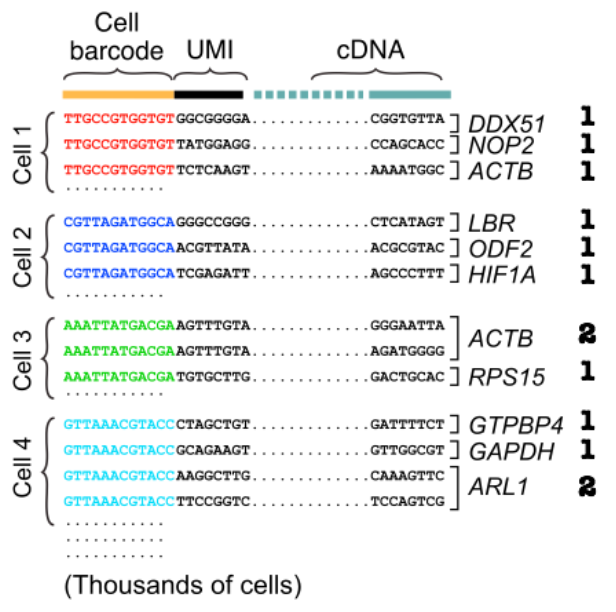

Chapter 4 Processing 10X RNA-seq data
4.1 Introduction
Raw RNA-sequencing data will be in the format of a fastq file. This format describes the read ID, read sequence and sequencing quality scores. Represented in the following format:
>ReadID
READ SEQUENCE
+
SEQUENCING QUALITY SCORESGenerally fastq files are pre-processed using quality control tools, such as FastQC. This outputs a series of metrics assessing the quality of sequence reads. We will skip this step as we are using a public (pre-checked) scRNA-seq dataset, and limited in time. Some of these metrics include:
1. Per base sequence quality
2. Per sequence quality scores
3. Per base sequence content
4. Per sequence GC content
5. Per base N content
6. Sequence Duplication Levels
7. Overrepresented Sequences
8. Adapter Content
9. Kmer ContentFor more details: https://rtsf.natsci.msu.edu/genomics/tech-notes/fastqc-tutorial-and-faq/
4.2 Read Alignment
Once confirming adequate sequencing quality of your library, the next goal is to align individual reads to the reference genome whilst retaining information about where the read originated from. The cell barcode from transcript reads capture this information. With the input of a gene annotation file (i.e. GTF file), not only can we decipher the location a read maps to in the genome, but the gene name it corresponds to. This in theory, this allows the quantification/count of reads which align to each gene/feature of the genome. This is important for downstream analysis where comparitive analysis between single cells occurs and these counts uncover differentially expressed genes. This can eventually lead to inferences such as unique cell type populations.
4.2.1 Building a reference genome index
Alignment to a reference genome first requires the generation of an genome index to facilitate the mapping process. This allows looking up parts of the genome in a much faster manner which is neccessary when trying to mapping millions of read sequences. This process saves alots of time and memory when aligning. An analogy to this process is reflected in book indexes. To find a specific part of a book, it is alot faster to look at the chapter indexes first to locate the region of interest instead of looking through every page of the book from top down.
Here we can provide an annotation file (.gtf) of the reference genome to provide information about where genes lie within the genome.
This step was performed in advanced to save time as it can take up to 1 hour to build a reference index for the human genome. The following command was performed:
STAR --runMode genomeGenerate --runThreadN 16 --genomeDir genome_index/ --genomeFastaFiles ref_files/hg38.fa --sjdbGTFfile ref_files/gencode.v32.annotation.gtfThe genome index output is located in the folder genome_index.
**Quiz**
1. How many base pairs are there in the (a) human (b) mouse genome?
2. What is the file size of the whole human genome DNA sequence?
3. What format is this file in?4.2.2 Alignment of reads
The next step is to map the raw fastq files to the reference genome. In this tutorial we will be using Human CD45+ cells from human melanoma samples, which were sequenced via 10X Genomics and Chromium™ Single Cell 3’ Reagent Kit (v2). More information about this dataset can be found at https://www.ncbi.nlm.nih.gov/sra/SRX6872900.
Paired-end sequencing outputs 2 fastq files corresponding to the 5’ and 3’ direction of sequencing. It is important to recognised the library preparation chemistry used for sequencing in order to determine cell barcode and UMI barcode sequence length and location. This allows the mapping algorithm to distinguish which sequences are barcodes and which are transcript sequences.

**Quiz**
1. What is the difference between a cell barcode and UMI barcode? and what are their significance?
2. What are the lengths of the cell barcode and UMI barcode used in our dataset?
3. Are these barcodes located on the 5' or 3' read file?Generally 10X Genomics scRNA-Seq reads are aligned using the tool Cell Ranger. It is a wrapper to the open source alignment tool, STAR by Alexander Dobin, which optimises algorithms to handle the sequencing chemistry of 10X genomic library preparation. This includes UMI counting and calling cell barcodes. More information can be found at https://support.10xgenomics.com/single-cell-gene-expression/software/pipelines/latest/algorithms/overview.
In this workshop we will be using a recently developed application of STAR, STARsolo, which is an effective solution to handle droplet-based scRNA-seq data analysis. It provides an output similar to Cell Ranger which is important for downstream analysis packages such as Seurat. STARsolo also performs extremely fast read alignment of single cell raw reads from 10X genomics. It claims to be 10 times faster than Cell Ranger. More details can be found in the latest version of STAR manual: https://github.com/alexdobin/STAR/blob/master/doc/STARmanual.pdf.
Some of the key functions of STARsolo are:
1. Error correction and demultiplexing of cell barcodes using user-input whitelist.
2. Mapping the reads to the reference genome using the standard STAR spliced read alignment algorithm.
3. Error correction and collapsing (deduplication) of Unique Molecular Identifiers (UMIs).
4. Quantification of per-cell gene expression by counting the number of reads per gene.Create an output directory called “starsolo_out”.
mkdir starsolo_out
Run the following command to perform read alignment:
STAR --genomeDir genome_index/ --soloType Droplet --soloCBwhitelist barcode_whitelist/10X_v2.txt --runThreadN 16 --readFilesCommand zcat --readFilesIn fastq/MelanomaT_CD45plus_IGO_07734_S5_L002_R2_001.fastq.gz fastq/MelanomaT_CD45plus_IGO_07734_S5_L002_R1_001.fastq.gz --outFileNamePrefix ~/starsolo_out/This step can take several minutes. Please work through the quiz questions in the meanwhile and ask questions!
**Quiz**
1. Describe the function of each parameter in the sequence alignment command.
2. What are some different types of scRNA-sequencing methods other than droplet based? And describe their differences.4.3 STARsolo Output

The STARsolo program outputs a large amount of files reflecting details of the read alignment process. We will only discuss some of the key files important for downstream analysis.
- The BAM file, contains information about mapped reads, in a binary compressed format. When de-compressed into a SAM file, information is stored as a tab seperated table where the columns corresponds to:
QNAME : read name (generally will include UMI barcode if applicable)
FLAG : number tag indicating the “type” of alignment, link to explanation of all possible “types”
RNAME : reference sequence name (i.e. chromosome read is mapped to).
POS : leftmost mapping position
MAPQ : Mapping quality
CIGAR : string indicating the matching/mismatching parts of the read (may include soft-clipping).
RNEXT : reference name of the mate/next read
PNEXT : POS for mate/next read
TLEN : Template length (length of reference region the read is mapped to)
SEQ : read sequence
QUAL : read qualityBAM files can be viewed using SAMtools.
samtools view output.bam
Alignment summary files, Features.stat and Summary.csv, contains information about basic mapping details. This can serve as an easy preliminary quality control check of the alignment process.
The feature matrix file, matrix.mtx, contains information about the counts of genes mapped in each individual cell. The column names corresponds to each individual cell barcode, and the row names corresponds to all annotated genes. Due to the large size of this data, it is stored as a sparse matrix.
Auxiliary files, barcodes.tsv and features.tsv, provide extra metadata important for downstream analysis. These files along with the matrix file are required for analysis in gold standard scRNA-seq data analysis package, seurat.
4.4 Downloading Results from the Cloud
After the generation of your alignment results and feature count data, you may want to download the data locally for downstream analysis and minimise costs associated with maintaining your aws cloud instance. Run the following command from your local command line system to copy your entire output folder.
scp -i ~/path/to/user1.pem -r ubuntu@ec2-XX-XX-XXX-XX.us-west-1.compute.amazonaws.com:~/path/to/output_foler ~/path/to/target/download location4.5 Terminate your AWS Instance
Remember to terminate your AWS instance to prevent costs associated with usage. This can be performed by navigating to the EC2 dashboard > Running Instances. Then select your running instance > Actions > Instance State > Terminate.
Note: This will remove all data files stored on the instance so make your to backup any required data files either locally or by using Amazon’s data storage service, S3 Bucket.